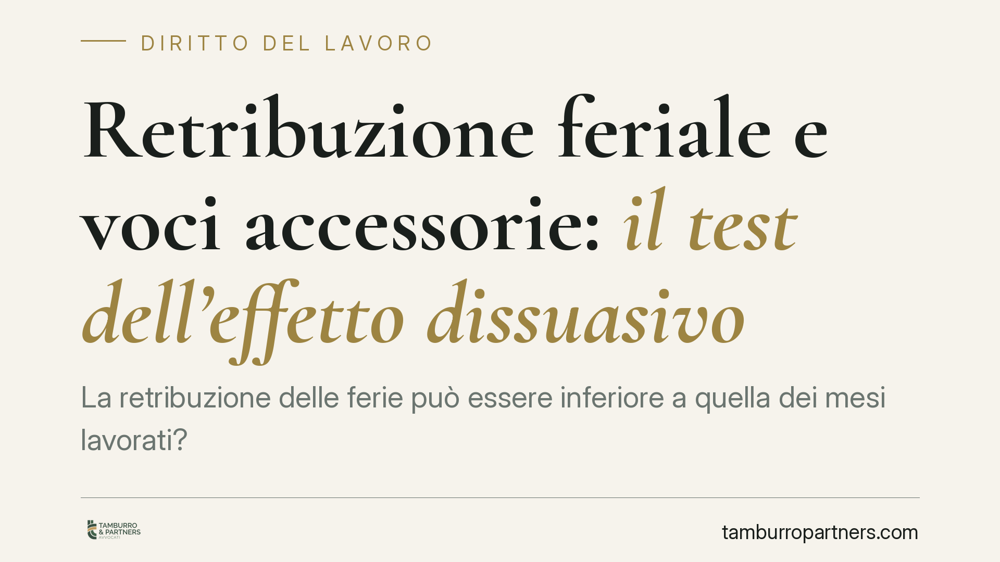

Retribuzione feriale e voci accessorie: il test dell'effetto dissuasivo
La retribuzione delle ferie può essere inferiore a quella dei mesi lavorati? La Corte di Cassazione torna sul tema e precisa che il datore può escludere alcune indennità accessorie dal compenso feriale, purché la riduzione non scoraggi il lavoratore dal godere del riposo. Il parametro di controllo si sposta dalla singola busta paga all'incidenza percentuale sulla retribuzione annua lorda.

Il caso
Un macchinista di un'azienda ferroviaria contestava le buste paga relative ai periodi di ferie: la retribuzione risultava più bassa rispetto ai mesi ordinari perché priva di alcune indennità accessorie legate all'effettiva prestazione (indennità di turno, maggiorazioni collegate a specifiche modalità di servizio).
La Corte d'appello di Torino aveva affrontato il nodo e la questione è giunta in Cassazione, con il coinvolgimento anche delle organizzazioni sindacali sul piano degli assetti contrattuali.
> Nota sulla fonte. L'ordinanza citata da alcune testate con numerazione riferita al 2026 è in corso di verifica quanto a numero, sezione e data di deposito. In attesa di riscontro sulla banca dati ufficiale, ci riferiamo qui all'orientamento della Sezione Lavoro, già consolidato nella giurisprudenza interna e unionale. Il principio resta valido a prescindere dagli estremi esatti del provvedimento.
Inquadramento normativo
Il diritto alle ferie annuali retribuite ha fondamento, nell'ordinamento interno, nell'art. 36 della Costituzione e nell'art. 10 del D.Lgs. 66/2003, che recepisce la disciplina europea sull'orario di lavoro.
La norma di riferimento sovranazionale è l'art. 7 della Direttiva 2003/88/CE, secondo cui ogni lavoratore ha diritto a ferie annuali retribuite di almeno quattro settimane. La Corte di giustizia dell'Unione europea ne ha chiarito la portata in modo preciso: la retribuzione durante le ferie deve essere comparabile a quella percepita durante i periodi di lavoro, perché una riduzione eccessiva produrrebbe un effetto dissuasivo, spingendo il lavoratore a rinunciare al riposo.
Su questo punto la giurisprudenza unionale è stratificata: Williams (C-155/10) ha distinto tra componenti della retribuzione collegate in modo intrinseco alle mansioni e componenti meramente occasionali; Lock (C-539/12) ha incluso nella base feriale le provvigioni collegate strutturalmente all'attività; Hein (C-385/17) ha ribadito che riduzioni marginali non violano l'art. 7 purché non scoraggino il godimento delle ferie.
Cosa stabilisce l'orientamento
Il cuore della decisione è la metrica di valutazione.
Non si deve verificare la differenza sulla singola busta paga mensile, dove l'assenza di una o più indennità può apparire vistosa. Il controllo va condotto sull'incidenza percentuale del taglio rispetto alla retribuzione annua lorda.
La ragione è logica: le ferie si collocano in periodi limitati dell'anno; una riduzione che nel singolo mese pesa molto può risultare trascurabile se rapportata all'intero compenso annuale. Solo se il taglio raggiunge una soglia tale da scoraggiare concretamente il lavoratore dal fruire del riposo si configura la violazione del diritto UE.
Resta ferma la distinzione tra:
- Voci intrinseche alla prestazione: indennità collegate in modo stabile e strutturale alle mansioni. Vanno di regola incluse nella retribuzione feriale.
- Voci occasionali o accessorie: compensi legati a eventi specifici non abituali. Possono essere esclusi, nei limiti dell'effetto dissuasivo.
Implicazioni pratiche
Per il lavoratore, la conseguenza è che non ogni differenza tra la busta di luglio e quella di settembre è di per sé illegittima. Occorre quantificare l'impatto reale sul reddito annuo e verificare la natura delle voci escluse.
Per l'azienda, l'orientamento offre un margine di manovra ma non una delega in bianco: l'esclusione delle sole voci genuinamente occasionali è sostenibile, mentre il taglio di componenti strutturali espone al rischio di contenzioso e di ricostruzione retroattiva della retribuzione dovuta.
I contratti collettivi mantengono un ruolo centrale, perché la qualificazione di una voce come stabile o occasionale dipende spesso dalla disciplina negoziale applicata.
Cosa fare in concreto
Se sei lavoratore:
- Confronta le buste paga dei periodi feriali con quelle dei mesi lavorati e isola le voci mancanti.
- Verifica nel CCNL applicato se quelle indennità sono collegate stabilmente alle mansioni o a eventi occasionali.
- Calcola l'incidenza del taglio sulla retribuzione annua lorda, non sul singolo mese, prima di valutare un'azione.
Se sei datore di lavoro:
- Mappa le componenti retributive distinguendo voci intrinseche e occasionali, con riscontro nel contratto collettivo.
- Documenta il criterio di calcolo della retribuzione feriale e verifica che la riduzione resti sotto la soglia dell'effetto dissuasivo.
Consigliamo, in entrambi i casi, un'analisi preventiva della struttura retributiva prima di agire o di consolidare una prassi di pagamento.
---
Contributo informativo a cura di Tamburro & Partners Avvocati — Avv. Giuseppe Tamburro. Non costituisce parere legale.
Ogni storia di lavoro ha i suoi tempi.
Se gestisci HR e vuoi un confronto su contenzioso, ispezioni o licenziamenti, scrivi allo studio. Ti rispondiamo entro un giorno lavorativo.